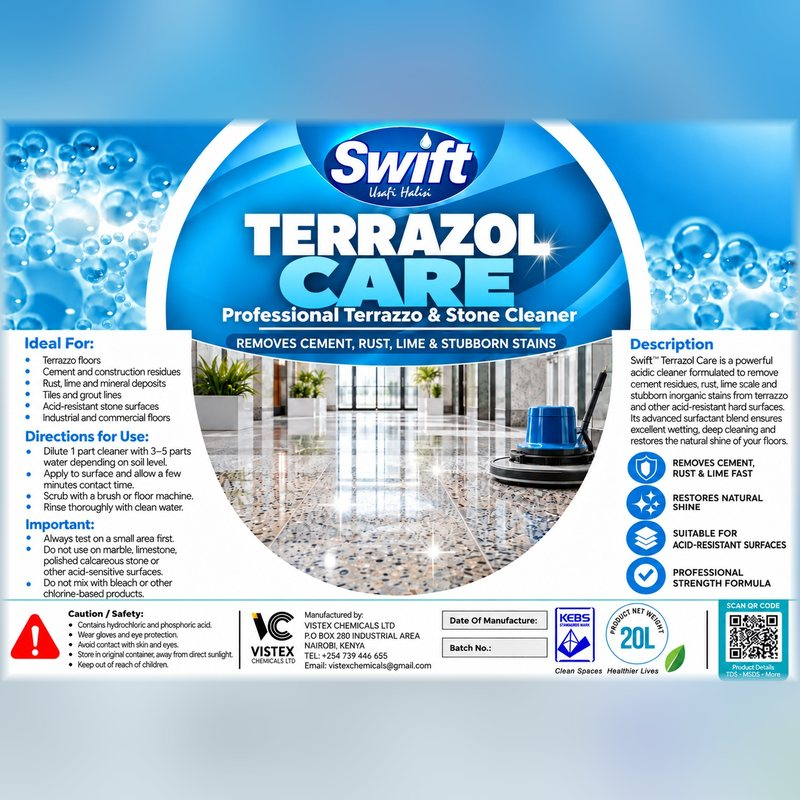

Terrazol Care
Professional terrazzo & stone cleaner

Powerful acidic cleaner that removes cement residue, rust, lime scale and stubborn inorganic stains from terrazzo and other acid-resistant hard floors — and restores their natural shine. Built for post-construction cleans and heavy commercial floors.
- Pack size
- 5 L / 20 L
- Form
- Clear acidic liquid
- pH
- < 1.0 (as supplied)
- Dilution
- 1 part to 3–5 parts water, depending on soil level
- Active ingredient
- Hydrochloric acid, phosphoric acid, NP-9 surfactant, formaldehyde
- Shelf life
- 12 months from manufacture
- Range
- Housekeeping & Room Care
- Brand
- Swift — made by Vistex Chemicals Ltd
Features
- Removes cement residue
- Rust, lime & mineral deposits
- Restores natural shine
- Professional strength
How to use
- Always test on a small, inconspicuous area first.
- Dilute 1 part Terrazol Care with 3–5 parts water, depending on soil level.
- Apply to the surface and allow a few minutes’ contact time — do not let it dry on.
- Scrub with a brush or floor machine.
- Rinse thoroughly with clean water.
Ideal applications
- Terrazzo floors
- Cement and construction residues
- Tiles and grout lines
- Acid-resistant stone surfaces
- Industrial and commercial floors
Suitable for
- Terrazzo
- Ceramic tiles
- Acid-resistant concrete
- Granite and other acid-resistant stone
Not for use on
- Marble, limestone and polished calcareous stone
- Other acid-sensitive surfaces
- Chrome, brass and aluminium
- Painted surfaces
Corrosive: Contains hydrochloric and phosphoric acid. Wear gloves and eye protection, avoid contact with skin and eyes, and use in a well-ventilated area. Store in the original container, tightly closed, away from direct sunlight.
Technical data sheet (PDF · 425 KB)
Manufactured in Nairobi, Kenya by Vistex Chemicals Ltd under the Swift brand. Request a quote or call 0739 446 655.